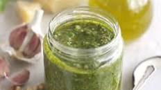

Homemade Pesto

Description
Delicious pesto with few ingredients
So fresh and no nasty preservatives
Can be made suitable for vegans
Ingredients
- 50g pine nuts
- 80g basil
- 50g parmesan or vegan alternative
- 150ml olive oil
- 2 garlic cloves
Recipe
- Heat a small frying pan over low heat and cook the pine nuts until golden
- Put into a food processor with the basil, parmesan, olive oil and garlic
- Whizz until smooth, then season to taste
That's it! Freeze any leftovers for up to 3 months. Simply defrost in the fridge and add to freshly cooked pasta for another quick and easy favourite